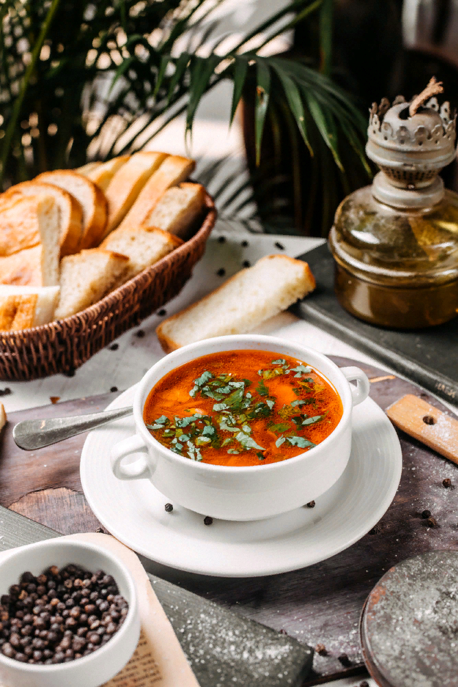
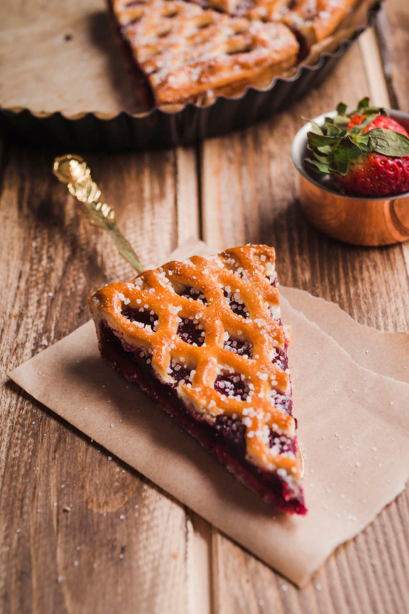
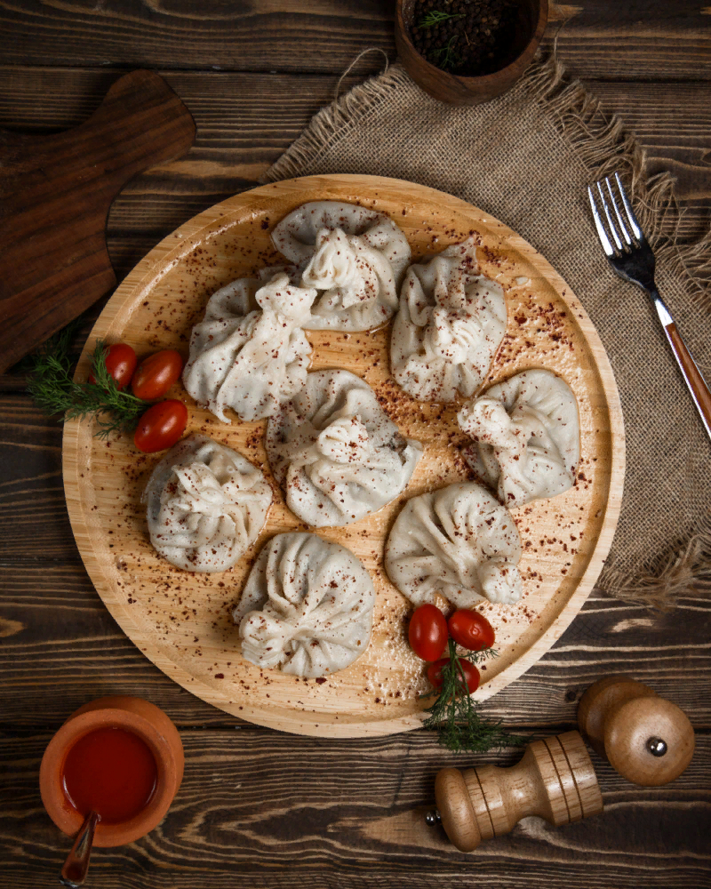

Горячий заправочный суп на основе свёклы, которая придаёт ему характерный красный цвет.

Ягодный пирог — это быстрая, вкусная и полезная выпечка, которую можно готовить из слоеного, дрожжевого или песочного теста. В качестве начинки используют любые сезонные ягоды, как в свежем, так и в замороженном виде.

Хинкали – блюдо грузинской кухни, также некоторых народов Кавказа. По сути хинкали представляет собой пельменное тесто с фаршем внутри, завернутое особым образом, которое отваривается до готовности на пару и подается к столу с соусами.